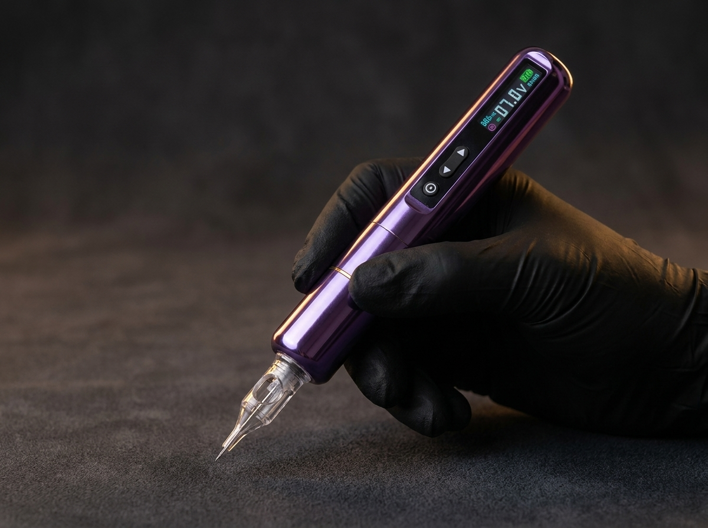

Behandelgids

Volle, gedefinieerde wenkbrauwen zonder dagelijks potlood of gel: dat is het doel van hairstroke wenkbrauwen. Met verschillende technieken wordt pigment aangebracht dat de vorm van echte wenkbrauwharen nabootst of een zachte, ingekleurde look creëert — afgestemd op gezicht, huidtype en persoonlijke voorkeur.
Met een ultrafijne naald worden individuele, haardunne lijntjes gezet die de richting en structuur van echte wenkbrauwharen volgen. Dit geeft het meest natuurlijke, "haartje-voor-haartje"-effect en is met name geliefd bij cliënten die een subtiel, ongeverfd resultaat willen.
In plaats van losse haarlijntjes wordt hier een zachte, egale kleurschaduw aangebracht — vergelijkbaar met het effect van wenkbrauwpoeder. Dit geeft een net iets voller, meer ingekleurd resultaat en is een populaire keuze voor een gedefinieerde daglook.
Een combinatie van beide technieken: hairstrokes aan de randen voor natuurlijke overgangen, met een zachte poeder-vulling in het midden voor extra volume en definitie.
Dit hangt af van onder meer huidtype (bij een vette huid houden fijne hairstrokes minder scherp lang stand dan powder brows), de gewenste intensiteit en persoonlijke stijl. Dit wordt tijdens het consult samen bepaald.
Voorafgaand aan de pigmentatie wordt de wenkbrauwvorm zorgvuldig voorgetekend en samen met u afgestemd — pas als de vorm klopt, wordt er gestart met pigmenteren. De meeste cliënten ervaren een milde, doffe sensatie; een verdovende crème kan het comfort verder verhogen.
Direct na de behandeling oogt de kleur intenser dan het uiteindelijke resultaat — dit vervaagt tijdens het helingsproces naar een zachtere, natuurlijke tint. Een vervolgsessie na enkele weken is gebruikelijk om eventuele lichte onvolkomenheden bij te werken. Met de juiste nazorg blijft het resultaat geruime tijd mooi; een touch-up na verloop van tijd houdt vorm en kleur fris.
Tijdens het consult bekijken we samen uw wenkbrauwvorm, huidtype en wensen.
Plan een consult